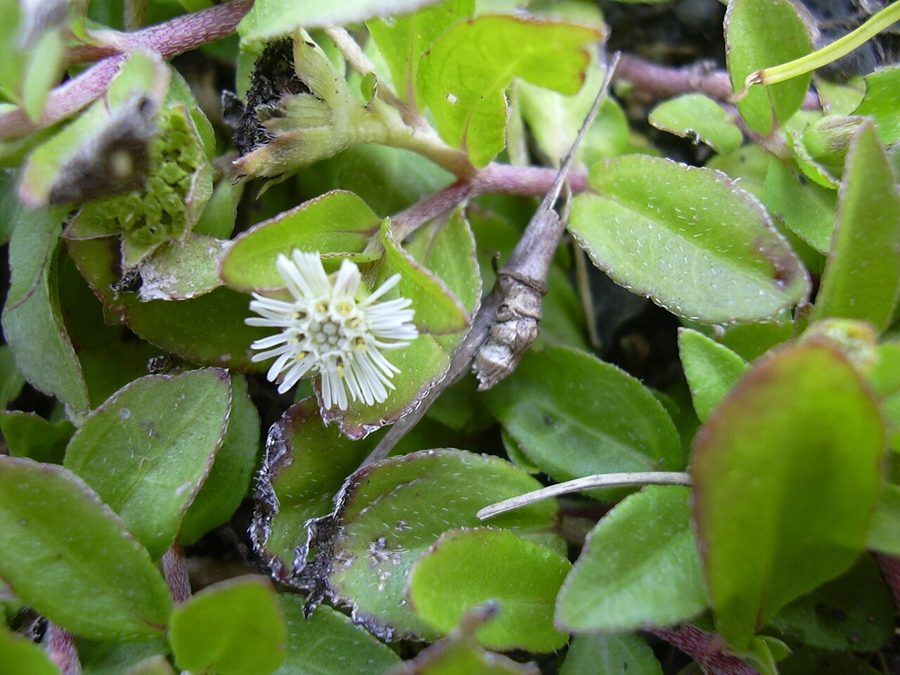

भृंगराजFalse Daisy
Eclipta prostrata · Asteraceae · FLR-0114

- Scientific name
- Eclipta prostrata (L.) L.
- Family
- Asteraceae
- Hindi
- भृंगराज
- Local names
- bhringraj, bhangra, bhangraiya, kesraj, kesuti
- Status here
- native
- Movement
- Resident, here all year
- IUCN
- not evaluated
- Review
- audited and independently read
When to look कब देखें
Expected mainly in June, July, August, September, October, November, December, January.
Uses and possibilities उपयोग और संभावनाएँ
“Traditional medicine” means a documented traditional use, not a claim that it works. Nothing on this page is medical advice.
Drawn from the documented uses in the profile below, where each is labelled traditional, current or a research lead. All uses →
भृंगराज / False Daisy
Eclipta prostrata (L.) L. — Asteraceae
भृंगराज — धान की मेड़ और तालाब के किनारे उगने वाला छोटा, खुरदुरी पत्तियों वाला पौधा जिस पर सफ़ेद बटन जैसे फूल खिलते हैं। तने को मसलो तो रस पहले हरा, फिर काला पड़ जाता है — इसी से पुराने ज़माने में स्याही और बालों का रंग बनता था, और "केसराज" नाम पड़ा। आयुर्वेद में बालों के तेल और जिगर की दवा के लिए इसका नाम सबसे ऊपर है।
Quick Identification त्वरित पहचान
| Feature | Description |
|---|---|
| Habit | Erect or sprawling annual 20–60 cm, branching, rooting at the lower nodes on mud |
| Stem | Rounded, rough with short stiff white hairs, often reddish |
| Leaves | Opposite, 2–8 cm, narrow-elliptic, nearly stalkless, rough to the touch, faintly toothed |
| Flower heads | White, 6–9 mm, like a tiny daisy with short ray florets around a yellowish-white disc, on stalks from the leaf axils |
| Fruit | Small dark wedge-shaped seeds (achenes) with a warty surface, no feathery pappus |
| The test | Crushed stem juice turns black on the skin within minutes |
Field tip: On any wet bund or ditch bank in the monsoon, the sprawling plant with rough opposite leaves and small white button flowers. Crush a stem between the fingers: the juice darkens to black, which no other bund weed does.
हिंदी — कैसे पहचानें: गीली मेड़ और नाली के किनारे खुरदुरी आमने-सामने पत्तियों वाला पौधा, छोटे सफ़ेद बटन जैसे फूल। तना मसलिए — रस काला पड़ गया तो भृंगराज है।
Morphology आकारिकी
Biometrics (Indian plains):
| Measurement | Range |
|---|---|
| Height | 20–60 cm |
| Leaf | 2–8 × 0.5–2 cm |
| Flower head diameter | 6–9 mm |
| Achene | 2–3 mm |
Stem: Scabrid with appressed hairs, swollen at the nodes; the blackening of the sap is due to wedelolactone and related coumestans oxidising in air.
Leaves: Simple, opposite, sessile or nearly so, with three main veins, both surfaces rough.
Flower heads: Heterogamous: an outer row or two of short white ray florets and a disc of tubular florets; heads solitary or paired on slender axillary peduncles; two kinds of achene, the outer three-angled, the inner flattened.
हिंदी: तना खुरदुरा, गाँठों पर फूला; पत्ती तीन नसों वाली, दोनों तरफ़ खुरदुरी; फूल में बाहर सफ़ेद किरण-पंखुड़ियाँ और बीच में नली जैसे फूल। रस का काला पड़ना वेडेलोलैक्टोन नाम के पदार्थ से है।
Behaviour & Ecology व्यवहार और पारिस्थितिकी
A plant of wet mud: paddy bunds, drain sides, the drawdown zone of ponds, seepage below canals. It germinates as the ground wets, roots at the nodes where it touches mud, and flowers and seeds through the monsoon and the cool season for as long as moisture lasts, dying on the first truly dry ground.
The small heads are visited by sweat bees, hoverflies and small butterflies such as the grass blues; the seeds are eaten by finches and carried in mud on feet and hooves. Cattle graze it lightly.
हिंदी: गीली मिट्टी का पौधा — धान की मेड़, नाली, तालाब का सूखता किनारा। जहाँ तना मिट्टी छूता है वहाँ जड़ निकलती है; नमी रहे तो सर्दी तक फूल। छोटी मधुमक्खियाँ, मक्खियाँ और नीली तितलियाँ आती हैं; बीज कीचड़ के साथ पैरों पर फैलते हैं।
Life Cycle / Phenology जीवन चक्र
| Month / season | Event |
|---|---|
| June–July | Germination on wetted mud |
| July–December | Flowering and seeding, continuous |
| January–February | Persists on pond margins and in drains |
| March–May | Dies back; survives only at permanent water |
हिंदी: बरसात में उगता है, सर्दी तक फूलता है, गरमी में सिर्फ़ पानी के पास बचता है।
Associated Species / Interactions संबंधित प्रजातियाँ
- Bund companions: Doob Grass, Nutgrass, Asthma Weed, and the paddy itself (Paddy).
- Visitors: Lesser Grass Blue and other small butterflies, hoverflies, halictid bees.
- Wet neighbours: Water Spinach and Water Fern at the water's edge.
Pests and Diseases कीट और रोग
- Leaf-mining fly larvae and small leaf beetles in the monsoon.
- Powdery mildew late in the season. Nothing that threatens it.
Agricultural / Human Relevance कृषि प्रासंगिकता
Traditional and Ethnobotanical Use (documented uses; not medical advice):
- Hair. The best-known use: leaf juice or the plant boiled in oil as bhringraj tel, applied to the scalp against greying and hair loss. "King of the hair" is what the Sanskrit name means. The black sap was also a direct hair dye.
- Liver. In Ayurveda the plant is a leading remedy for liver and spleen complaints and jaundice; in Chinese medicine (han lian cao) likewise. Recorded in Kirtikar & Basu and Chopra. Wedelolactone has been studied for liver protection in animals.
- Ink and tattoo. The blackening juice served as a writing ink and, in parts of India, as a tattoo pigment.
- Food. Young leaves are cooked as a pot-herb in places.
- Caution. Large internal doses can purge; identify the plant carefully, since other bund weeds look similar.
Today. A staple of the Ayurvedic herbal trade, gathered wild and cultivated on a small scale; bhringraj oils and hair products sell in every market. Supply is from wet-ground gathering, which a village could organise.
Research direction (a lead, not a result). Wedelolactone and Eclipta extracts have a considerable laboratory literature on liver protection, snake-venom neutralisation and antimicrobial effects, and some small clinical studies on hair growth. Promising, unproven, and a reasonable lead for a plant that grows free on every bund.
हिंदी: बालों का तेल और काला रंग, जिगर और पीलिया की आयुर्वेदिक दवा, पुराने ज़माने की स्याही और गोदने का रंग, कहीं-कहीं साग। बाज़ार में भृंगराज तेल हर जगह है और पौधा हर मेड़ पर मुफ़्त उगता है। वेडेलोलैक्टोन पर प्रयोगशाला में काफी शोध है, पर पक्का प्रमाण नहीं।
Expected Locally स्थानीय रूप से अपेक्षित
Not a field record. Written from published accounts for eastern Uttar Pradesh. No confirmed local sighting yet — if you have seen it, that is what the atlas needs.
अभी तक स्थानीय पुष्टि नहीं। यह विवरण प्रकाशित स्रोतों से है, किसी अवलोकन से नहीं।
To be expected on paddy bunds, drain banks and pond margins throughout the district from July to December. The black-juice test makes a confirmed record easy.
Distribution वितरण
Global range: Throughout the tropics and warm temperate regions of the world; origin uncertain, probably the Americas, but long established in Asia.
In India: Everywhere in wet ground to about 2,000 m.
In Uttar Pradesh: Common throughout the rice tracts.
In Basti district / eastern UP: Expected on every bund and ditch.
Research Questions शोध प्रश्न
Anyone can investigate these | कोई भी इन प्रश्नों की जाँच कर सकता है
- How long does the crushed juice take to turn black, and does it wash off? / रस कितनी देर में काला होता है, और धुलता है या नहीं? — Time it on the back of the hand.
- Who in the village uses bhringraj for hair, and how is it prepared? — Ask; record the recipe.
- Which butterflies visit the flowers? — Watch a bund for fifteen minutes in September.
- Where is it thickest: bund, drain or pond edge? / मेड़, नाली या तालाब के किनारे — कहाँ सबसे ज़्यादा? — Count plants in a metre of each.
- Does the bazaar bhringraj oil name the plant, and where does it come from? — Read labels and ask shopkeepers.
Similar Species मिलती-जुलती प्रजातियाँ
| Species | How to tell apart | हिंदी |
|---|---|---|
| Wedelia (Sphagneticola calendulacea) | Yellow heads, creeping, shinier leaves; the "yellow bhringraj" of some traditions | पीले फूल |
| Tridax Daisy (Tridax procumbens) | Heads on long leafless stalks, cream rays, hairy lobed leaves; dry ground not wet | सूखी जगह, लंबी डंडी |
| Blumea and other bund composites | Alternate leaves, purplish heads; no black juice | पत्तियाँ एकांतर, रस काला नहीं |
Field rule: Opposite rough leaves, small white daisy heads, wet ground, and juice that turns black: bhringraj.
Taxonomy & Classification वर्गीकरण
Original description. Linnaeus, Species Plantarum 2: 902 (1753), as Verbesina prostrata; placed in Eclipta by Linnaeus himself in Mantissa Plantarum 2: 286 (1771). The widely used name Eclipta alba (L.) Hassk. is a synonym. Eclipta is from the Greek for "deficient", for the absent pappus.
Subspecies. Monotypic — no subspecies are currently recognised.
Family and order placement. Asteraceae, tribe Heliantheae, the sunflower tribe; order Asterales.
Phylogenetic notes. Close to Wedelia and Sphagneticola; the three are confused in the herbal trade, where "yellow" and "white" bhringraj are sold.
IUCN status rationale. Not evaluated. A widespread weed of wet ground.
Photo Gallery फोटो गैलरी
Photos needed आवश्यक फोटो
- [ ] Plant on a paddy bund (मेड़ पर पौधा)
- [ ] Flower head close-up (फूल)
- [ ] The black stain from crushed stem (काला रस)
Atlas Connections संबंधित प्रजातियाँ
- Paddy — grows on its bunds
- Indian Gooseberry — the other classical hair herb, used together in oils
- Tridax Daisy — the look-alike of dry ground
- Lesser Grass Blue — visits the heads
References संदर्भ
- Linnaeus, C. (1753). Species Plantarum, vol. 2, p. 902. Stockholm. [original description, as Verbesina prostrata]
- Linnaeus, C. (1771). Mantissa Plantarum, vol. 2, p. 286. Stockholm. [transfer to Eclipta]
- Hooker, J.D. (1881). The Flora of British India, vol. 3. L. Reeve, London.
- Kirtikar, K.R. & Basu, B.D. (1935). Indian Medicinal Plants, 2nd ed., vol. 2. Lalit Mohan Basu, Allahabad.
- Chopra, R.N., Nayar, S.L. & Chopra, I.C. (1956). Glossary of Indian Medicinal Plants. CSIR, New Delhi.
- Council of Scientific and Industrial Research (1952). The Wealth of India: Raw Materials, vol. 3 (D–E). CSIR, New Delhi.
- Duthie, J.F. (1903). Flora of the Upper Gangetic Plain, vol. 1. Government Printing, Calcutta.
- GBIF Occurrence Data — Eclipta prostrata, India (2026).
Source file: species/flora/medicinal/bhringraj.md